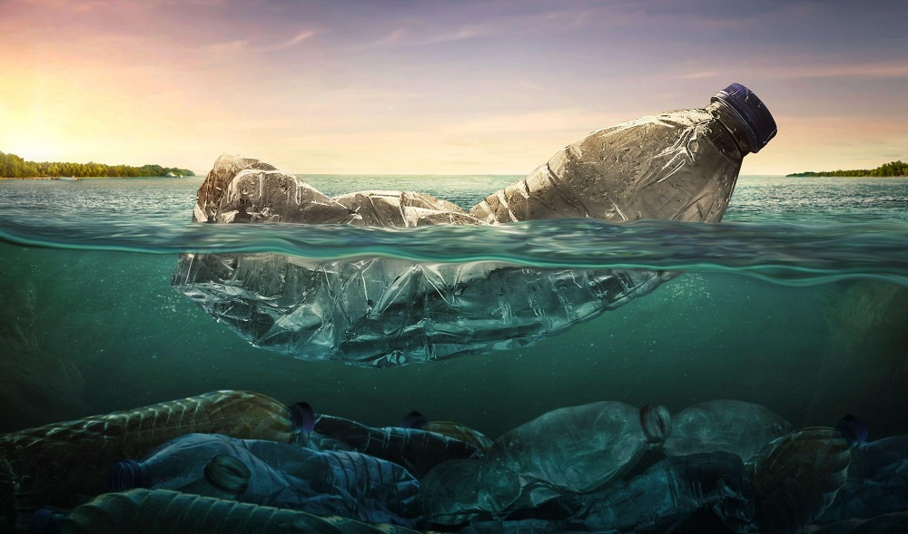

Water Pollution
Water pollution is when harmful substances, like chemicals or rubbish, get into our rivers, lakes, and oceans, making the water dirty and unsafe. These harmful things can come from factories, farms, or even from the rubbish we throw away. When this happens, animals that live in the water, like fish and turtles, can get sick. Sometimes, it even hurts plants that grow in the water. If the water is polluted, it can also affect us because we need clean water to drink, swim, shower, cook, and other things.
Water pollution can happen in many ways. For example, when people throw plastic bottles or wrappers into the water, these things don't break down quickly. They can float around in the water for a long time and hurt animals. Another problem is when chemicals from farms wash into rivers and lakes after it rains. These chemicals can harm both the water and the animals living there.
Did You Know?
- More than 8 million tonnes (1 tonne = 1000 kg) of plastic enters the ocean every year.
- At least 320 million people in China do not have clean drinking water. (To put that in perspective, there are about 5 million people in New Zealand).
- Many animals living in the ocean accidentally eat plastic.
Before vs After


Quiz
The answers to these questions are on the bottom of the 'References' page.
- What causes water pollution?
- Where do these causes come from?